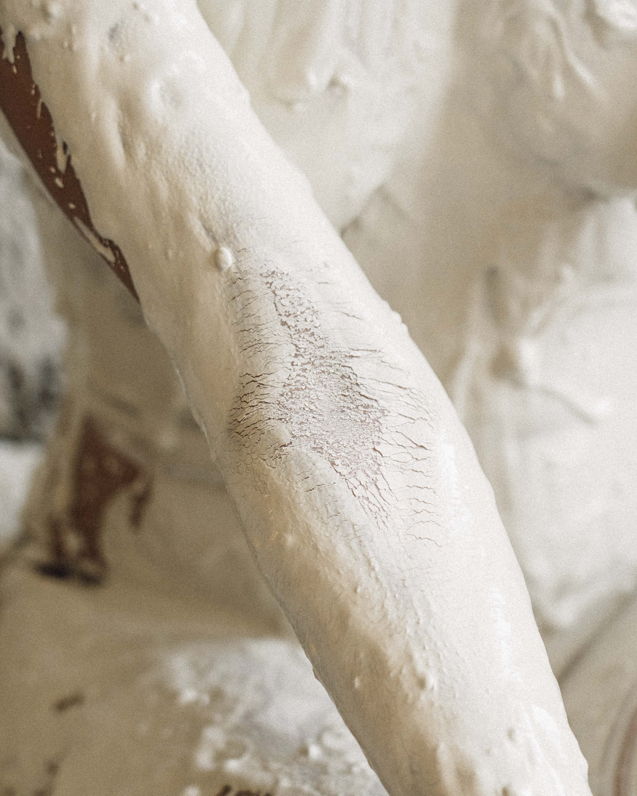
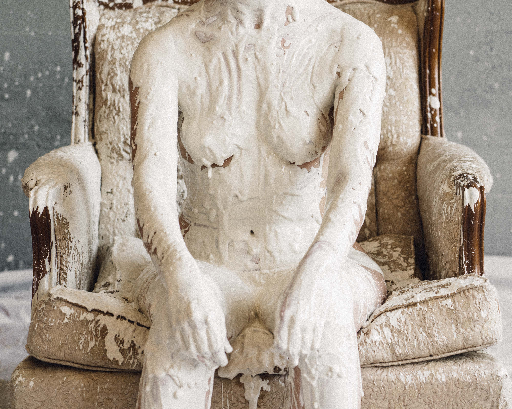
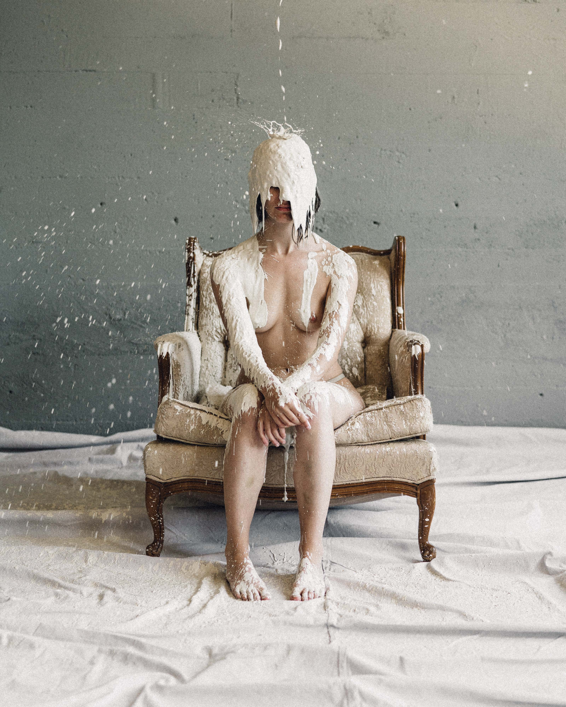
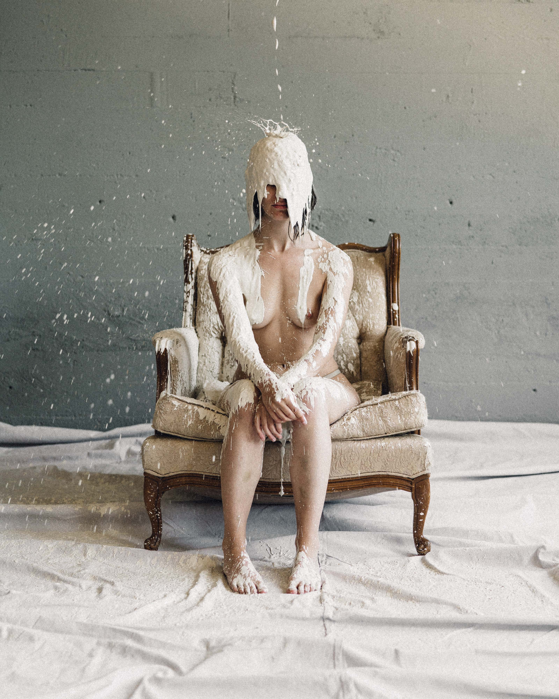
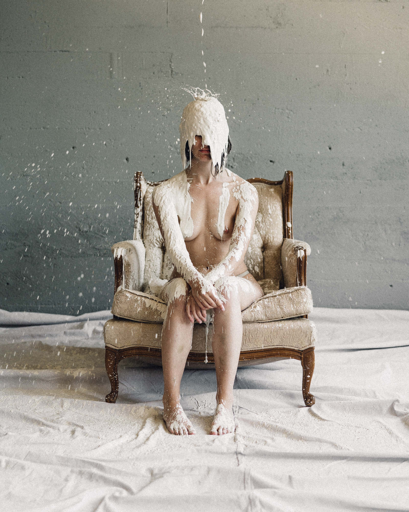

 


This work is an attempt to slow the process of disappearance. Covering the body and its environment in thick clay, we are forced to reckon with the varying textures of passing time. As the material changes states, we are confronted with the unusual ways time moves in our memories and the privilege of forgetting.
Photos by AJ Ragasa
Thanks to Maria Manness & Seth Geiser
